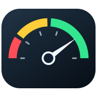

LOCAL SESSION
No usage windows returned for this account.

Codex usage at a glance.
No usage windows returned for this account.
Changes save automatically.
Visible when Codex Meter is focused on a Mac with a Touch Bar.
Close to keep in tray